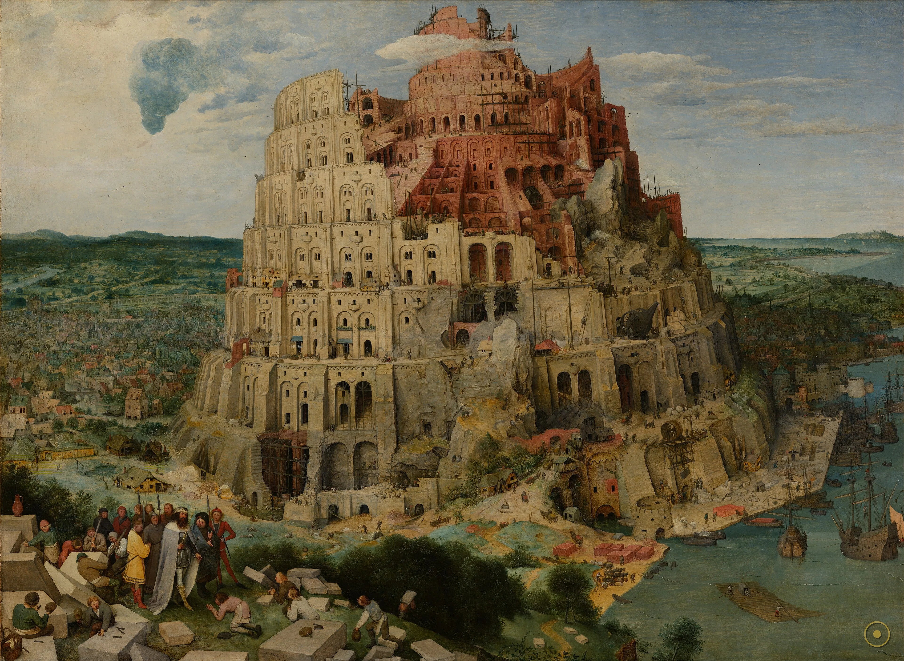
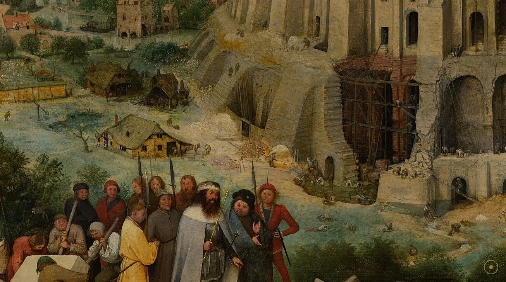
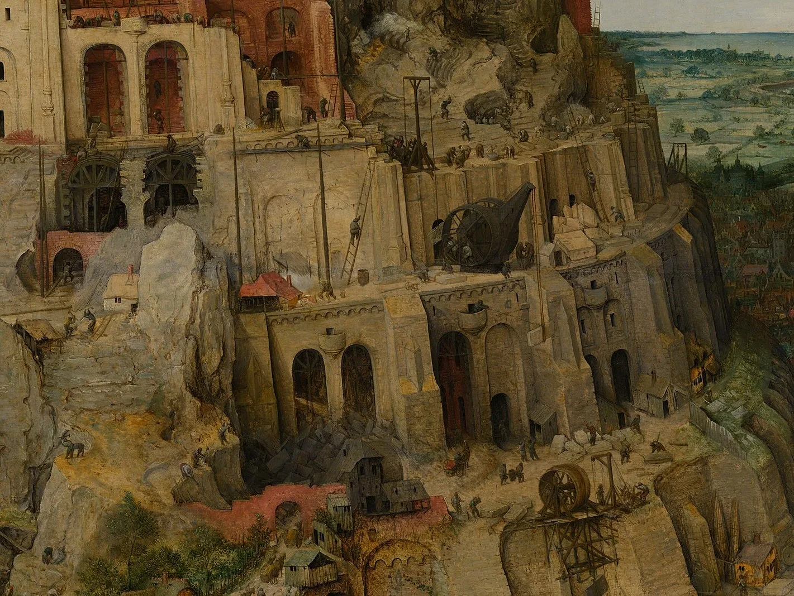
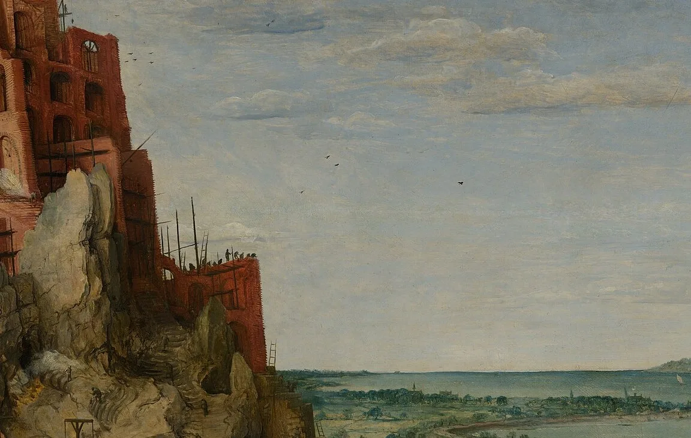
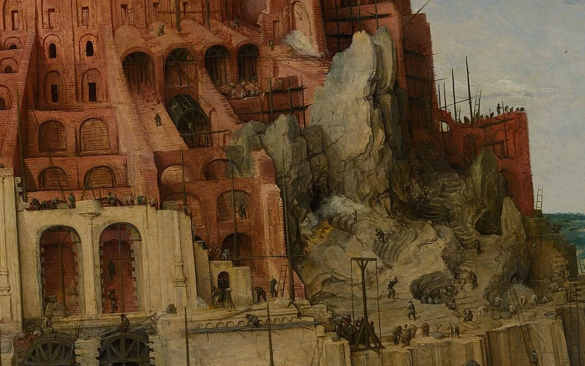
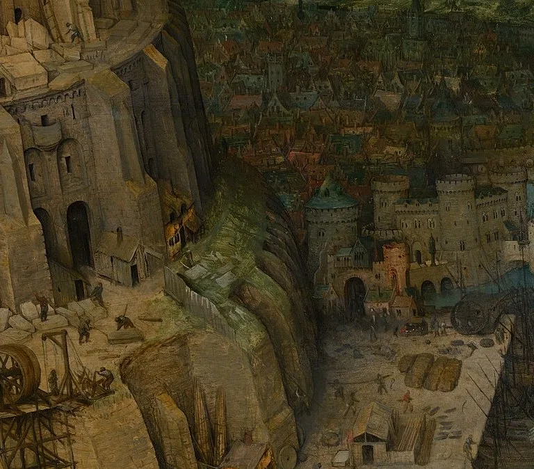
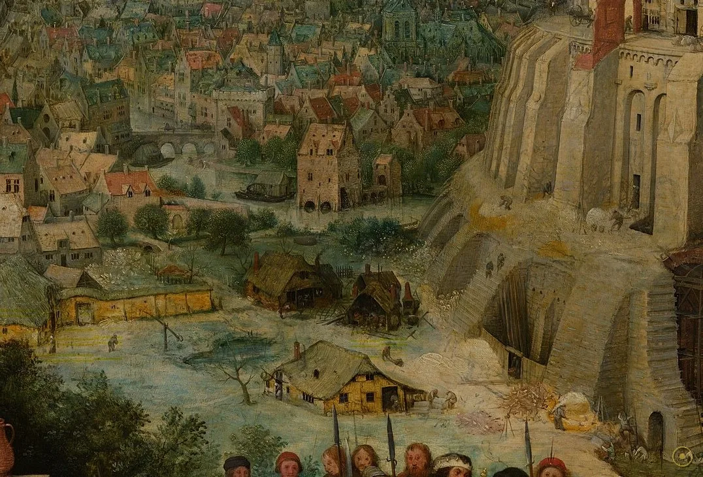
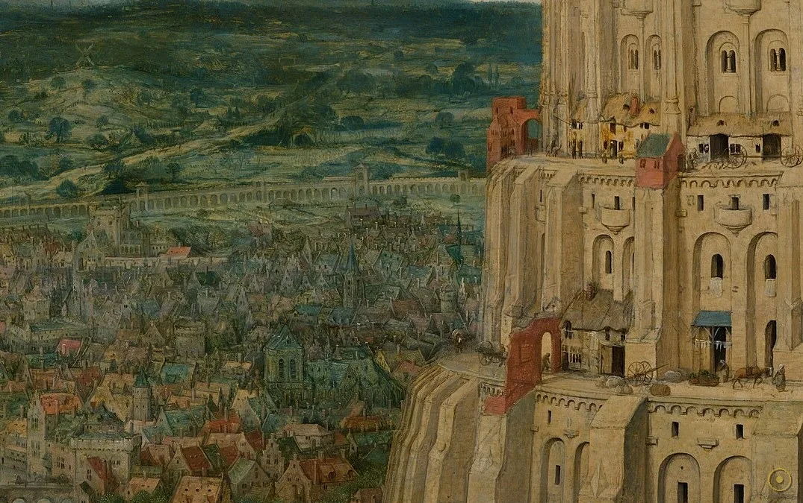
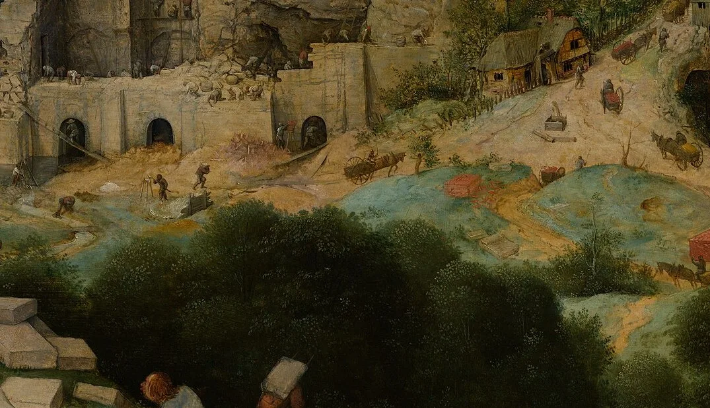
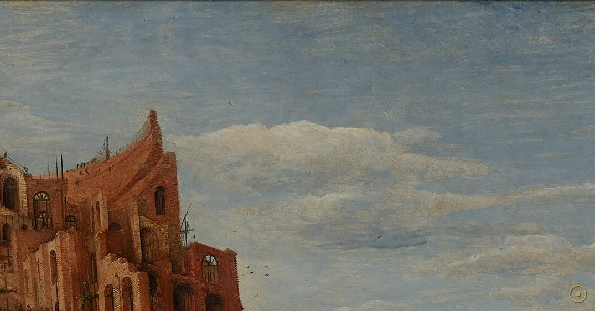

《创世记》说：人类曾讲同一种语言，他们向东迁徙，在示拿平原立誓，要建一座塔，『塔顶通天』，好为自己立名、免得分散。上帝下来一看，变乱了他们的语言——人从此再也听不懂彼此，工程也就此烂尾。1563 年前后，老彼得·勃鲁盖尔把这一幕画成了木板上的巨塔。
勃鲁盖尔没有画『变乱语言』那一瞬间——那太抽象，无法入画。他画的是变乱之前的工地：塔已经盖得高入云霄，却还没有完工，石匠们还在塔身上爬上爬下。
更耐人寻味的是，他把这座『通天塔』画成了罗马斗兽场的样子：一层层拱廊盘旋上升，像一条巨大的螺旋。仿佛在说——人类的傲慢，不过是在重演古罗马的野心。
而就在塔身最显眼的地方，勃鲁盖尔留下了一道道裂缝。上帝还没出手，石头自己就已经开始裂了。
—— 综合自 Kunsthistorisches Museum、The Met、Smarthistory、Britannica 等公开资料
勃鲁盖尔画下的，是一座还没倒下、却已经注定要倒下的塔。
勃鲁盖尔把整座工程、整座城市和整支施工队都塞进了一个画面——每一处细节，都是一则关于『傲慢』与『劳碌』的注脚。

点击画面中的 ✦ 光点 查看画面细节 · 图片来源：Wikimedia Commons（公有领域）
勃鲁盖尔一生画过至少三版巴别塔，如今只剩两版存世。它们像同一构想的两个镜头——一个完整，一个残片。
1552–1553 · 罗马
勃鲁盖尔游历意大利，在罗马亲眼见到斗兽场废墟。这座『古人最大工程』的残骸，后来成了他笔下巴别塔的骨架。最早的巴别塔是一幅画在象牙上的微型画（已佚），正是此行所作。
➤1563 · 维也纳版
为安特卫普银行家尼可拉斯·容赫林克所作，木板油画 114 × 155 厘米，今藏维也纳艺术史博物馆。塔身螺旋完整、细节最丰，是我们今天最熟悉的那一座。
➤1563 后 · 鹿特丹版
另一版《小巴别塔》现藏鹿特丹博伊曼斯美术馆，尺寸更小（约 60 × 74.5 厘米）。它被认为绘于维也纳版之后，构图更紧凑，塔身甚至可能被裁切过——像同一个梦的另一半。

在维也纳版里，国王面前一块石头上，勃鲁盖尔亲手签下了名字与年份：『BRVEGEL. FE. M.CCCCC.LXIII』（『BRVEGEL 作于 1563』）。这是全画极少数明确的文字信息。
这幅画是受安特卫普银行家尼可拉斯·容赫林克委托所作——此人手中一度握有勃鲁盖尔多达十六幅画，是画家最重要的赞助人之一。
更有意思的是材质：它不是画在布上，而是画在木板（oak panel）上。16 世纪的尼德兰画家偏爱木板，因为它更利于保存细密的笔触——而勃鲁盖尔恰恰把『无数小人』画到了木纹里去。
至于『塔为什么会裂』，艺术史家各有解读：有人读成『神对傲慢的预判』，有人读成『工程本身的力学崩溃』。勃鲁盖尔什么都没说，只把裂缝留在了最显眼的地方。
※ 维也纳版签名为学界公认；容赫林克藏有勃鲁盖尔约十六幅画，据 Kunsthistorisches Museum 等公开资料；关于裂缝的寓意存在多种解读，此处并列呈现。
把画面拆开看：从国王到吊车，从石匠到裂缝——勃鲁盖尔把『建造』这件事，拆成了一组互相映照的特写。

盘旋上升的拱廊巨塔，轮廓借自罗马斗兽场。
塔脚华服人马，画面里最小的『甲方』。

木制吊车高悬塔顶，工程却永远差一步。

成千上万的剪影，把建造画成集体蠕动。

石头先裂了，崩坏早于神的干预。

以家乡港口为原型的圣经工地。

城墙环绕的城，供数万施工者起居。

前景最辛苦的人，最先被困在工地。

刺破云层的塔尖，最冷的一句旁白。
巴别塔出自《创世记》第 11 章：人类讲同一种语言、立誓建塔通天，上帝变乱其语言，使他们分散各地。在宗教改革与西班牙语统治下的低地，这个『因傲慢而崩解』的故事，天然契合北方尼德兰对『大一统强权』的焦虑——勃鲁盖尔画的不只是圣经，更是他身处的时代。
勃鲁盖尔承袭了尼德兰细密画传统（凡·艾克一脉），擅长把成千上万微小人物铺进宏大的风景。他不依赖理想化的人体，而靠『俯瞰式的全景』与『惊人的细节密度』叙事——这种『世界尽收眼底』的视角，影响了此后两个世纪的风景画。
把通天塔画成斗兽场，是勃鲁盖尔最巧妙的一笔：他让『人类最狂妄的工程』，直接套上『罗马最狂妄的工程』的壳。观者一眼就懂——人类的傲慢，从来都是同一个模样，且终将同一种方式收场。
勃鲁盖尔生前以『谚语画』与风景闻名，巴别塔在他手里从宗教题材升格为『文明寓言』。今天，维也纳版是艺术史博物馆的镇馆级藏品，与丢勒、提香等巨匠并列；它也成为关于『工程狂妄』最常被引用的图像之一。
勃鲁盖尔游罗马，见斗兽场废墟；随后绘出最早的（象牙微型）巴别塔，今已佚。
维也纳版《巴别塔》完成，受安特卫普银行家容赫林克委托，画于木板并签名题年。
鹿特丹版《小巴别塔》绘成，构图更紧凑，今藏博伊曼斯美术馆。
维也纳版入藏艺术史博物馆（KHM），成为其尼德兰绘画收藏的核心名作之一。
它被视为『工程狂妄』与『语言/共同体崩解』的母题，频繁出现在政治漫画、文学与流行文化里。